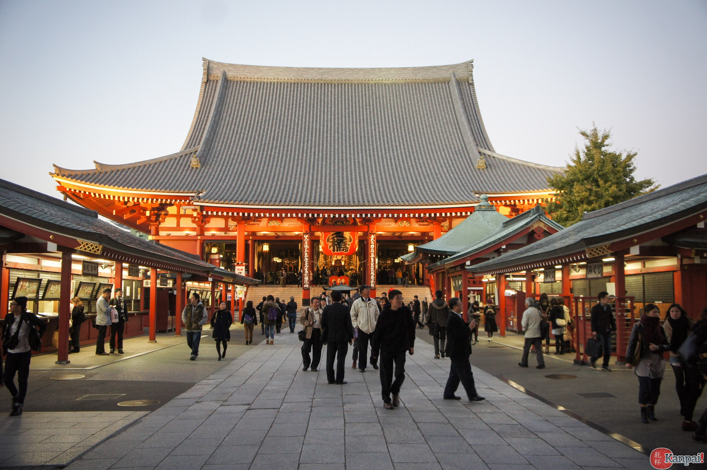

Senso-ji
Dans le cœur du Japon, parmi les cerisiers se trouve Sensō-ji (浅草寺). C’est un temple bouddhiste à Tokyo : un attrait touristique populaire non seulement chez les touristes gaijin (étrangers de la perspective d’un japonais), mais aussi avec la population japonaise. La population Japonaise est composée de 51.8% de Shintoïstes (Religion semi-animiste, qui prie des kami, c’est-à-dire des esprits), mais aussi beaucoup de Bouddhistes (34.9%) , ainsi qu’une minorité catholique (seulment 2,3%). Sensō-ji fut fondé au 7ème siècle : c’est donc le plus vieux temple encore en fonction à Tokyo. Il est dédié à Kanon Bosatsu, la Bodhisattva de la compassion et c’est aussi le l’endroit spirituel le plus visité au monde avec 30 million de visiteurs annuels.
La rue Nakamise (仲見世通り) est le lieu où les festivals se tiennent durant l’été et où la plupart des boutiques touristiques reliés au temple se trouvent. Cette rue à l’approche du temple est souvent plus à l’intention des touristes que les visiteurs réguliers, car il comporte des effets communs au Japon, comme des yukata et des kimonos. Il comporte aussi des petits commerces alimentaires où on peut se procurer de la nourriture de rue japonaise. N.B soyez aux aguets car même si la nourriture qu’on peut se procurer s’avère immangeable, surtout ne crachez pas sur les lieux du temple, sinon vous risquez de vous attirer la fureur du kami local (la plupart des temples bouddhistes comportent un lieu pour vénérer des kami shintoïstes, puisque le bouddhisme est venu au Japon longtemps après les début de cette religion, donc, au fur du temps, des temples bouddhistes y ont été ajouté.)
Même si c’est un lieu de culte important bouddhiste, il sert davantage comme lieu culturel japonais, puisque la religion n’est pas pratiquée par beaucoup de gens au Japon, à un tel point que, quelques temples bouddhistes incorporent une partie shintoïste pour vénérer le kami tutélaire du lieu. Ce temple peut servir de lieu de prière, mais la plupart des visiteurs du temple ne prient pas à un intervalle précis. Ainsi, quand de grandes festivités ont lieu, ils se tiennent à l’extérieur, puisque l’intérieur des temples est réservé à la préservation d’objets sacrées et à des rites non-destinés au public (puisque les temples bouddhistes sont souvent accompagnées d’un monastère, les moines y performent des rites et non un curé ou quelqu’un d’agréé par une institution.)
Le swastika (卐) est un symbole religieux associé au bouddhisme qui est souvent utilisé dans les temples bouddhistes, ainsi que hindoues à travers le monde. Il a été introduit au Japon au 8ème siècle et symbolise le tout ou l’éternité c’est un symbole présent dans l’architecture des temples (dans des motif de manji, swastika en japonais, enclenchant), ainsi que sur des cartes, où il représente le temple bouddhiste.
On y offre des activités comme de la calligraphie pour 500￥ où on écrit des caractères sino-chinois sur une toile, ce qui peut t’apporter la chance, le bonheur ou beaucoup d’autre bénéfices, dépendant du caractère écrit. On offre également la visite de l’intérieur du temple, où on affiche la statue du bodhisattva depuis la fondation du temple, paraît-il. De plus, en regardant vers le haut, on voit de multiples peintures sur le plafond et, en se promenant, on peut trouver beaucoup d’autres œuvres d’art. À l’extérieur du temple, on peut passer par le plus vieux pont de Tokyo (1618) ainsi que des statues pour vénérer les fondateurs du temple, encore une fois témoin d’un mélange de religions.
Retour à la carte浅草寺[Encyclopédie Numérique]. Consultée le 1 mai 2018 https://ja.wikipedia.org/wiki/浅草寺
電通総研、図録▽世界各国の宗教[Étude Statistique]. Consultée le 2 mai 2018. http://www2.ttcn.ne.jp/honkawa/9460.html
Buddhist Temples In Japan[Encyclopédie Numérique]. Consultée le 6 mai 2018 https://en.wikipedia.org/wiki/Shinbutsu-shūgō
Shūgō[Encyclopédie Numérique]. Consultée le 6 mai 2018 https://ja.wikipedia.org/wiki/浅草寺
Swastika[Encyclopédie Numérique]. Consultée le 6 mai 2018 https://en.wikipedia.org/wiki/Swastika#Asia
Things to see in Tokyo[Guide de Voyages]. Consultée le 1 mai 2018 https://www.worldtravelguide.net/guides/asia/japan/tokyo/things-to-see/
あさくさかんのん浅草寺[Site du lieu]. Consultée le 6 mai 2018 http://www.senso-ji.jp
Retour à la carte